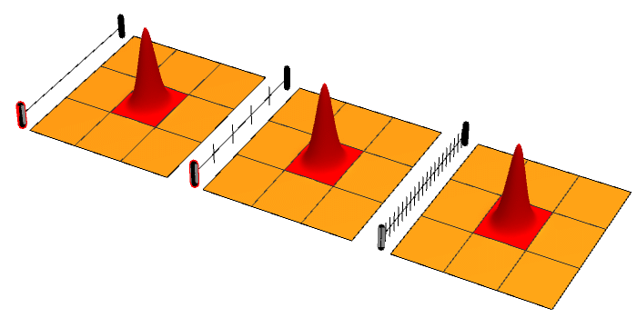
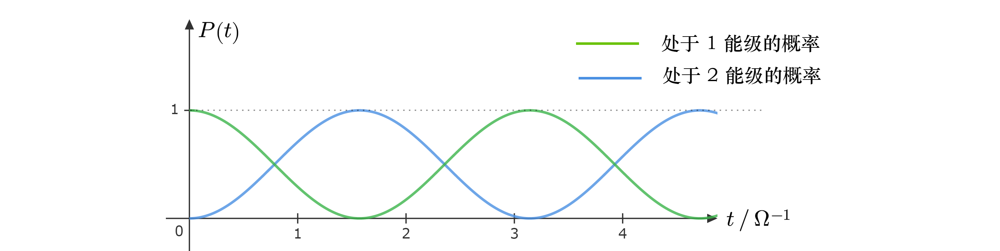
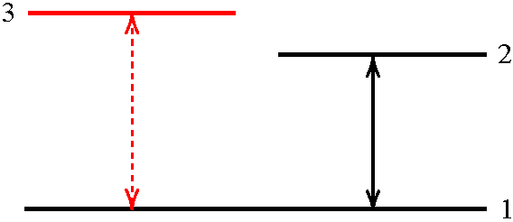
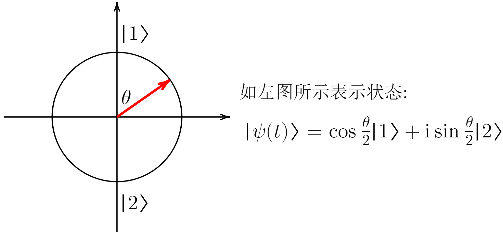

芝诺悖论 (Zeno Paradoxes) 是古希腊哲学家芝诺 (Zeno of Elea) 提出的一系列思想实验。其中最著名的当属 “阿喀琉斯 (Achilles) 追乌龟” 的故事。假设一个勇士正在追逐前方与之相距 $L$ 一只乌龟。勇士的速度是 $v_1$，而乌龟的速度是 $v_2$，满足 $v_1 > v_2$。那么，小学生都会计算，在
$$
\Delta t = \frac{L}{v_1 - v_2}
$$
的时间之后，勇士将追上乌龟。但是，芝诺提出这样一个想法：在某个乌龟领先于勇士时刻，将乌龟所在的位置标记下来。那么，当勇士追到标记位置的时候，乌龟又往前爬了一段距离，仍然领先于勇士。这时候重复刚才的操作：将乌龟的位置标记下来，然后等勇士追到标记位置，乌龟就又往前前进了一段距离……如此往复下去，可以得出勇士永远也追不上乌龟这样一个反直觉的结论！(见下面的动图)
类似的一系列思想实验还有：“飞矢不动悖论”“排队悖论”等等 [点击此处了解更多]
悖论的解决：在“阿喀琉斯追乌龟”的故事中，我们可以注意到：虽然我们对于时间进行了无穷次分割操作，但是，分割得的时间长度以指数形式递减。因为等比级数是收敛的，所以即使我们将这个思维过程无穷无尽地进行下去，得到的时间长度仍是有限的。勇士“永远”追不上乌龟的结论显然是错误的。“飞矢不动悖论”“排队悖论”的症结与此类似，都在于我们对时间进行了无穷次分割操作。芝诺悖论的提出和解决在历史上促使人们对于无限和有限的性质进行了深入的思考，对于微积分的诞生起到了重要的启发作用
量子芝诺效应的物理图像非常简单直接。我们知道，在量子力学中，测量的结果是概率性的。对于一个可观测量 $\hat{A}$，它的本征值 $\lambda_1,\lambda_2,\cdots,\lambda_n$ 对应的本征态为 $|\psi_1\rangle,|\psi_2\rangle,\cdots,|\psi_n\rangle$。如果某一时刻系统的量子态是 $|\psi\rangle$，那么测量到结果 $\lambda_i$ 的概率为 $p(i)=|\langle\psi_i |\psi\rangle|^2$，测量之后体系的量子态"坍缩"为 $|\psi_i\rangle$。
这个“坍缩”的性质非常有趣。现在想象一个物理过程，一个体系从初态 $|\psi_0\rangle$ 开始，按照 $|\psi(t)\rangle=\mathrm{exp}(-\mathrm{i}\hat{H}t)|\psi_0\rangle$ 含时演化。如果初态是测量算符 $\hat{M}$ 的本征态，那么在零时刻测量，波函数将以 100% 的概率坍缩到初态 $|\psi_0\rangle$。如果让波函数演化一小段时间，由于此时波函数和初态的差别较小，所以到初态波函数上的投影分量很接近1，也就是说测量后又有极大概率回到初态 $|\psi_0\rangle$。如果我们一直在很短的时间间隔内频繁地进行测量操作，量子态会有很大的概率一直回到初始状态。换句话说，量子态的弛豫过程被观测极大地延缓了，仿佛可以通过“观测”来“冻结”量子态。由于这个过程很像芝诺悖论中的“飞矢不动”，所以被称为量子芝诺效应 (Quantum Zeno Effect)[1]
我们可以通过上面的这张动图 (图源：Wikipedia) 来直观地理解量子芝诺效应。如图所示，一个粒子处在一个九宫格的二维平面内，它的初始量子态的波函数是一个位于正方形中央高斯波包。随着时间演化，波包会逐渐发生展宽（如左图所示）。我们现在去测量粒子在这个九宫格上的位置。我们所采用的测量算符一共有九个本征态，分别对应中心坐落在九宫格每一格的高斯波包。在 $T$ 的时间段内，我们以相等的时间间隔进行 $n$ 次测量。如果 $n$ 较小，则两次测量之间间隔时间较长，在波函数在初态上的投影较小，于是波包的位置很容易发生移动（如中图所示）。如果 $n$ 较大，则两次测量之间的间隔时间较短，波函数在初态上的投影值较大，所以有很大概率在测量后重新坍缩为初态。所以，在大 $n$ 极限之下，波函数将会被“冻结”在初态。（如右图所示）
自从量子芝诺效应在 1977 年被正式提出之后[1]，由于在极短时间内对于原子量子态的操控技术尚未成熟，所以一直没有实验来验证这个效应。1988 年 R.J.Cook 提出可以使用一个两能级系统加上一个于其中一个能级有强耦合的外部能级来验证量子芝诺效应的。[2] 1990年，国家标准局 (NIST) 将这个提议对在 9Be+ 原子中的超精细结构能级的冷原子系统中实现了。他们通过连续监测体系在低能级上的原子数目的衰减行为，勘测到了量子芝诺效应的证据。
我们考虑铍原子 9Be+ 的两个能级 1 和 2 (在实验中对应 9Be+ 原子 $2s^{2} \mathrm{S}_{1/2}$ 超精细能级的 $(m_I,m_J)=(\frac{1}{2},\frac{3}{2})$ 和 $(\frac{1}{2},\frac{1}{2})$ 两个能级)。施加频率等于 $(E_2-E_1)/\hbar$ 的电磁场，则体系处于两个能级的本征态的相干叠加中，并以拉比频率 $\Omega$ 发生拉比震荡。设 $t=0$ 时刻体系完全处于 1 能级上，则接下来处于 1 能级的概率为 $P_1(t)=\mathrm{cos}^{2}(\Omega t)$，处于 2 能级的概率为 $P_2=\mathrm{sin}^{2}(\Omega t)$，如下图所示
为了测量系统处于 1 还是 2，可以引入外部能级 3。假设外部能级 3 和能级 1 之间存在强耦合 (与能级 2 之间不存在直接的耦合)，可以通过用光脉冲将 1 能级上的电子激发到 3 能级。那么施加光脉冲的过程可以看作一次测量，使得 1，2 能级的相干叠加的波函数发生坍缩：如果波函数坍缩到 1 能级，那么电子将在光脉冲的作用下在 1 和 3 能级之间发生拉比震荡并发出频率为 $(E_3 - E_1)/\hbar$ 的辐射；如果波函数坍缩到 2 能级，那么将没有电子被激发到 3 能级上，也不会探测到体系对外辐射的光子。因此后面我们将发这个光脉冲成为"测量脉冲"。
实验中，体系一开始处于能级 $1$，然后对体系施加对应于 $1\to 2$ 的跃迁的共振 $\pi-$脉冲（脉冲长度为 $T=\pi/\Omega$）。如果不对体系进行测量，那么在 $\pi-$脉冲过后，体系将以 100% 的概率处于能级 $2$。如果在此期间对体系进行一系列测量，体系将进行一系列坍缩行为。测量越密集，体系最终位于 $2$ 能级的概率越小，处于 $1$ 能级的概率越大，“量子芝诺效应”越明显。
为了统计地描述这个体系，可以利用这个二能级系统的密度矩阵 $\hat{\rho}$，其中 $$ \hat{\rho}=\begin{pmatrix}\rho_{11}&\rho_{12}\\\rho_{21}&\rho_{22}\end{pmatrix},\ \rho_{ij}=|i\rangle\langle j|,\ i=1,2,j=1,2 $$ 密度矩阵的对角元表示体系在能级 1 和 2 上的概率（当体系是纯态 i.e. $\mathrm{tr}(\rho^2)=1$ 时，这个概率纯粹为量子概率；当体系为热态 i.e. $\mathrm{tr}(\rho^2)\in(0,1)$，这个概率是量子概率+经典概率），非对角元一般称为相干元，表示了两个能级之间的量子干涉。在拉比震荡的体系中，可以定义一个匀速旋转的矢量来方便地描述体系密度矩阵的演化。定义 $\mathbf{R}=(R_1,R_2,R_3)$，其中三个分量皆可用密度矩阵分量表示： $$ \begin{aligned} R_1 &\equiv \rho_{12} + \rho_{21}\\ R_2 &\equiv \mathrm{i}(\rho_{12}-\rho_{21})\\ R_3 &\equiv \rho_{22}-\rho_{11} = P_2 - P_1 \end{aligned} $$ 可以看到 $R_1$ 和 $R_2$ 提取出了相干元的信息，$R_3$ 提取出了对角元的信息。这个矢量 $\mathbf{R}$ 的时间演化方程非常简单。设体系拉比震荡频率为 $\Omega$，令 $\mathbf{\Omega} = (\Omega,0,0)$，则系统时间演化的方程为 $$ \frac{\mathrm{d}\mathbf{R}}{\mathrm{d}t}=\mathbf{\Omega}\times\mathbf{R} $$ $\mathbf{R}$ 矢量绕着 $x$ 轴以 $\Omega$ 的角速度作匀速转动。假设系统所有原子在初始是皆处于能级 1，在零时刻 $$ \mathbf{R}(0)=(0,0,-1) $$ 如果不作观测，那么 $\mathbf{R}$ 的演化可以写作 $$ \mathbf{R}(t) = (0,\mathrm{sin}(\Omega t),-\mathrm{cos}(\Omega t)) $$ 如果在 $t=t_0$ 利用脉冲光束进行测量（测量时间忽略不计），那么在测量之后，系统坍缩到 1 或者 2 态上，密度矩阵的相干元全部归零，所以 $\mathbf{R}$ 矢量的前两个分量也会消失 $$ \mathbf{R}(t_0) = (0,0,-\mathrm{cos}(\Omega t_0)) $$ 由于 $\mathrm{tr}(\hat{\rho})=\rho_{11}+\rho_{22}=1$，所以某时刻系统处于 2 能级的概率为 $$ P_2(t) = \rho_{22}(t) = \frac{1}{2}(1+R_3(t)) $$
下面的动画是在一个 $\pi$-脉冲内对 $\mathbf{R}$ 含时演化的模拟
在上面的模拟中完成一个 $\pi-$脉冲演化后，点击“绘图”画出处于能级 2 的概率 $P_2(t)$ 随时间的变化；
用密度矩阵是对系统的统计描述。为了更直观地理解，下面的模拟是对 $16\times 9$ 个二能级原子系进行，也是在外场的作用下完成一个 $\pi-$脉冲演化，期间你可以点击“观测”按钮进行脉冲观测。根据 Rabi 震荡的计算结果，对于单个原子，在没有外界观测的情况下，波函数的含时演化为（假设所有原子初始状态都在 $|1\rangle$） $$ |\psi(t)\rangle = \mathrm{cos}\left(\frac{\Omega}{2}t\right)|1\rangle + \mathrm{i}\operatorname{sin}\left(\frac{\Omega}{2}t\right)|2\rangle $$  在下面的模拟中：